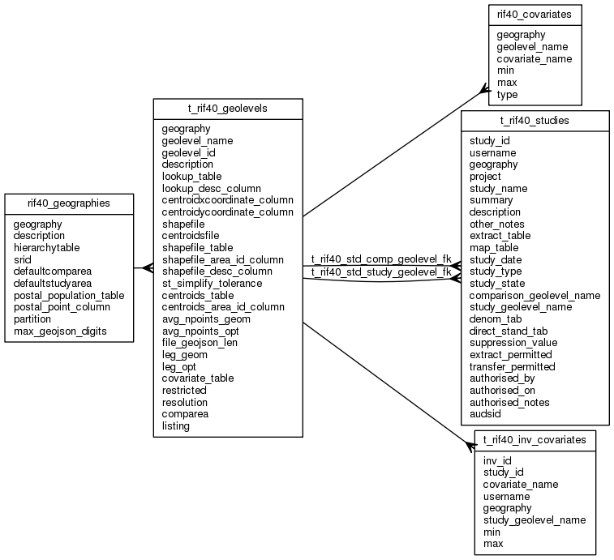

| Table: rif40.t_rif40_geolevels | |||
| Geolevels: hierarchy of level with a geography. Use this table for INSERT/UPDATE/DELETE; use RIF40_GEOLEVELS for SELECT. In RIF40_GEOLEVELS if the user has the RIF_STUDENT role the geolevels are restricted to LADUA/DISTRICT level resolution or lower. | |||
| Size: medium, Select frequency: medium, Update frequency: medium | |||
| Columns | |||
| Name | Type | Constraints | Description |
| geography | VARCHAR (50) | NOT NULL | Geography (e.g EW2001) |
| geolevel_name | VARCHAR (30) | NOT NULL | Name of geolevel. This will be a column name in the numerator/denominator tables |
| geolevel_id | SMALLINT | NOT NULL | ID for ordering (1=lowest resolution). Up to 99 supported. |
| description | VARCHAR (250) | NOT NULL | Description |
| lookup_table | VARCHAR (30) | NOT NULL | Lookup table name. This is used to translate codes to the common names, e.g a LADUA of 00BK is "Westminster" |
| lookup_desc_column | VARCHAR (30) | NOT NULL | Lookup table description column name. |
| centroidxcoordinate_column | VARCHAR (30) | Lookup table centroid X co-ordinate column name. Can also use CENTROIDSFILE instead. | |
| centroidycoordinate_column | VARCHAR (30) | Lookup table centroid Y co-ordinate column name. | |
| shapefile | VARCHAR (512) | Location of the GIS shape file. NULL if PostGress/PostGIS used. Can also use SHAPEFILE_GEOMETRY instead, | |
| centroidsfile | VARCHAR (512) | Location of the GIS centroids file. Can also use CENTROIDXCOORDINATE_COLUMN, CENTROIDYCOORDINATE_COLUMN instead. | |
| shapefile_table | VARCHAR (30) | Table containing GIS shape file data (created using shp2pgsql). | |
| shapefile_area_id_column | VARCHAR (30) | Column containing the AREA_IDs in SHAPEFILE_TABLE | |
| shapefile_desc_column | VARCHAR (30) | Column containing the AREA_ID descriptions in SHAPEFILE_TABLE | |
| st_simplify_tolerance | INTEGER | ST_SimplifyPreserveTopology(geom, st_simplify_tolerance) simplification parameter. Minimum length of a vector in the Douglas-Peucker alogorithm. The actual minimum length (see: ?) is normally 3-4x this parameter. Setting this parameter >20 will result in small slivers as ST_SimplifyPreserveTopology() processes on an object by object basis. Where two objects touch there is no guarantee that vectors in each object will be processed in the same way. Values of up to 1 (the projection unit is usually a metre) massively reduce points with minimal loss in resolution. Values up to 20 result in very small slivers for small objects (e.g. Census output area). Unfortunately the number of points effects the size of the GeoJSON files, so for most geolevels values of 20-500 are needed to create a sanely sized GeoJSON file. The best way to resolve the problem is to reduce to resolution of the input shapefile in ArcGIS to the amount that produces an optimal map at the highest resolution geolevel and simplify from there. It is also possible to sinmplify using the PostGIS Topolgy extension if the shapefile is well formed. | |
| centroids_table | VARCHAR (30) | Table containing GIS shape file data with Arc GIS calculated population weighted centroids (created using shp2pgsql). PostGIS does not support population weighted centroids. | |
| centroids_area_id_column | VARCHAR (30) | Column containing the AREA_IDs in CENTROIDS_TABLE. X and Y co-ordinates ciolumns are asummed to be named after CENTROIDXCOORDINATE_COLUMN and CENTROIDYCOORDINATE_COLUMN. | |
| avg_npoints_geom | BIGINT | Average number of points in a geometry object (AREA_ID). Used to evaluation the impact of ST_SIMPLIFY_TOLERANCE. | |
| avg_npoints_opt | BIGINT | Average number of points in a ST_SimplifyPreserveTopology() optimsed geometry object (AREA_ID). Used to evaluation the impact of ST_SIMPLIFY_TOLERANCE. | |
| file_geojson_len | BIGINT | File length estimate (in bytes) for conversion of the entire geolevel geometry to GeoJSON. Used to evaluation the impact of ST_SIMPLIFY_TOLERANCE. | |
| leg_geom | float8 (17, 17) | The average length (in projection units - usually metres) of a vector leg. Used to evaluation the impact of ST_SIMPLIFY_TOLERANCE. | |
| leg_opt | float8 (17, 17) | The average length (in projection units - usually metres) of a ST_SimplifyPreserveTopology() optimsed geometryvector leg. Used to evaluation the impact of ST_SIMPLIFY_TOLERANCE. | |
| covariate_table | VARCHAR (30) | Name of table used for covariates at this geolevel | |
| restricted | SMALLINT | Is geolevel access rectricted by Inforamtion Governance restrictions (0/1). If 1 (Yes) then a) students cannot access this geolevel and b) if the system parameter ExtractControl=1 then the user must be granted permission by a RIF_MANAGER to extract from the database the results, data extract and maps tables. This is enforced by the RIF application. | |
| resolution | SMALLINT | NOT NULL | Can use a map for selection at this resolution (0/1) |
| comparea | SMALLINT | NOT NULL | Able to be used as a comparison area (0/1) |
| listing | SMALLINT | NOT NULL | Able to be used in a disease map listing (0/1) |
| Primary key | |||
| Name | Columns | Description | |
| t_rif40_geolevels_pk | geography, geolevel_name | ||
| Foreign keys | |||
| Name | Columns | Referenced table | Description |
| t_rif40_geolevels_geog_fk | geography | rif40_geographies | |
| Incoming foreign keys | |||
| Name | Columns | Referencing table | Description |
| rif40_covariates_geolevel_fk | geography, geolevel_name | rif40_covariates | |
| t_rif40_std_comp_geolevel_fk | geography | t_rif40_studies | |
| t_rif40_std_study_geolevel_fk | geography, comparison_geolevel_name, study_geolevel_name | t_rif40_studies | |
| t_rif40_inv_cov_geolevel_fk | geography, study_geolevel_name | t_rif40_inv_covariates | |
| Indexes | |||
| Name | Columns | Description | |
| t_rif40_geolevels_uk2 | geography, geolevel_id | ||
| Grants | |||
| Role | Actions | ||
| rif_manager | select, insert, delete, update | ||
| rif40 | select, references, insert, delete, update | ||
| PUBLIC | select | ||
